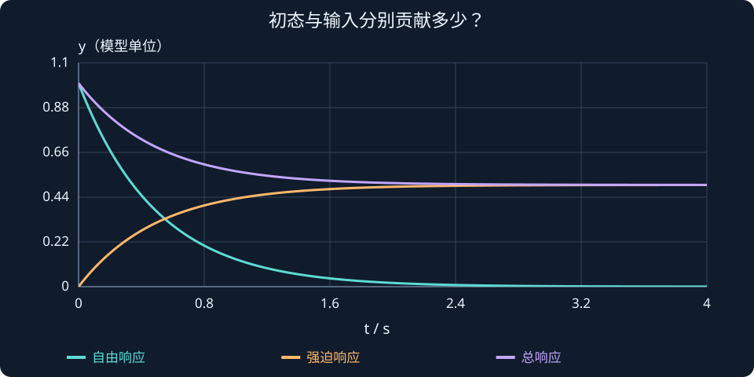

第 3 课：拉普拉斯变换与传递函数
本课目标：弄清时域与 $s$ 域的关系；独立从关节动力学推导开环与闭环传递函数；认识极点和稳态增益；用 MATLAB 验证。
1. 为什么不一直直接解微分方程？
第 2 课得到：
$$ J\ddot q+K_d\dot q+K_pq=K_pq_d $$
它直接描述机械臂的运动。但如果电机、传感器、滤波器、机械负载等环节越来越多，直接解联立微分方程会很繁琐。
拉普拉斯变换把线性常系数微分方程转化为关于复变量 $s$ 的代数关系。这样便于组合子系统、计算极点、推导响应。
记号为：
$$ Q(s)=\mathcal{L}\{q(t)\}=\int_0^\infty q(t)e^{-st}\,dt $$
这里 $q(t)$ 是时域函数，$Q(s)$ 是它的拉普拉斯变换，$s=\sigma+j\omega$ 是复变量，$j^2=-1$。你暂时不需要推导这个积分，但要知道变换有适用条件。
2. 导数如何变成关于 s 的表达式？
拉普拉斯变换的导数公式是：
$$ \mathcal L\{\dot q(t)\}=sQ(s)-q(0) $$
$$ \mathcal L\{\ddot q(t)\}=s^2Q(s)-sq(0)-\dot q(0) $$
传递函数按定义采用零初始条件。 如果 $q(0)=0$、$\dot q(0)=0$，公式就简化为：
$$ \mathcal L\{\dot q\}=sQ(s),\qquad\mathcal L\{\ddot q\}=s^2Q(s) $$
所以在零初始条件下，求导对应乘以 $s$，求二阶导对应乘以 $s^2$。但不能忘记初始条件，不是所有问题都能直接这样简化。
3. 推导开环机械臂传递函数
先忽略控制器，只看被控对象：
$$ J\ddot q=\tau $$
零初始条件下，拉普拉斯变换：
$$ Js^2Q(s)=\mathcal T(s) $$
其中 $\mathcal T(s)=\mathcal L\{\tau(t)\}$ 是输入力矩的变换，不是闭环传递函数。两边相除：
$$ \boxed{G(s)=\frac{Q(s)}{\mathcal T(s)}=\frac{1}{Js^2}} $$
这表示从力矩输入到角度输出的开环对象传递函数。它在 $s=0$ 处有二重极点，所以理想的无阻尼自由转动关节本身不是渐近稳定的。
力矩 τ ──► [被控对象 G(s)=1/(Js²)] ──► 角度 q
4. 推导 PD 控制后的闭环传递函数
固定目标角度下的控制律：
$$ \tau=K_p(q_d-q)-K_d\dot q $$
代入对象后：
$$ J\ddot q+K_d\dot q+K_pq=K_pq_d $$
零初始条件下：
$$ Js^2Q(s)+K_dsQ(s)+K_pQ(s)=K_pQ_d(s) $$
合并 $Q(s)$：
$$ (Js^2+K_ds+K_p)Q(s)=K_pQ_d(s) $$
得到闭环传递函数：
$$ \boxed{T(s)=\frac{Q(s)}{Q_d(s)}=\frac{K_p}{Js^2+K_ds+K_p}} $$
这个 $T(s)$ 的输入是目标角度，输出是实际角度。不要把它和对象从“力矩到角度”的 $G(s)$ 混淆。
条件提醒：上述闭环表达式对应 D 项反馈实际角速度，且推导传递函数时假定目标指令变化由 $K_pq_d$ 通道进入。如果使用速度误差 $K_d(\dot q_d-\dot q)$ 跟踪变化的参考轨迹，目标输入通道会多出 $K_ds$ 项。
5. 传递函数能告诉我们什么？
以第 2 课增加负载之后的参数为例：$J=4,K_p=16,K_d=8$。
$$ T(s)=\frac{16}{4s^2+8s+16}=\frac{4}{s^2+2s+4} $$
（1）极点来自分母
令分母为零：
$$ s^2+2s+4=0 $$
得到：
$$ s_{1,2}=-1\pm\sqrt3 j $$
两个极点实部均为 -1，故这个理想闭环系统渐近稳定；虚部非零，说明存在振荡模式。第 4 课会更系统地解释。
（2）直流增益与稳态跟踪
$$ T(0)=\frac44=1 $$
由于系统稳定，对于固定的阶跃目标角度，这个模型能在最终稳态准确到达目标值。
这里的结论依赖模型。真实机械臂受到重力、摩擦与外部扰动时，简单 PD 通常不能保证完全无稳态误差；以后会学习重力补偿和积分控制。
（3）同一组参数，传递函数说明什么？
由 $J,K_p,K_d$ 可以写出分母、算出极点，从而分析稳定性、阻尼和收敛特征。这就是第 2 课与第 3 课之间的联系。
同一个传递函数，为什么初始位置不同，曲线也不同？
先用一阶对象看清“输入响应”与“自由响应”。微分方程为：
$$ \dot y+2y=u,\qquad y(0)=1. $$
对单位阶跃输入变换时，把初值带上：
$$ \begin{aligned} sY(s)-1+2Y(s)&=\frac1s,\\ Y(s)&=\frac1{s(s+2)}+\frac1{s+2},\\ y(t)&=\frac12(1-e^{-2t})+e^{-2t}. \end{aligned} $$
第一项是零初态下由输入产生的强迫响应，第二项是初态产生的自由响应。二者相加，起点为 1，最后趋于 0.5。若把初值忘掉，只会得到“从 0 上升到 0.5”，起点就错了。
传递函数仍是 G(s)=1/(s+2)，因为它按零初态输入输出关系定义。模型不因初值变成另一个传递函数；只是总响应需要额外加上自由响应。将输入设成零时，剩下的正是初态衰减。

读图与操作：新交互可分别显示强迫响应、自由响应和二者之和。把初值依次设成 0、1、−1，再把输入设成 0。
使用条件：连续线性时不变一阶对象，a>0；叠加原理要求系统线性。
此演示需要 JavaScript。若没有显示，请检查浏览器设置。
先预测，再展开核对
同一模型改成 y(0)=−1，单位阶跃下最终值和初始值分别是多少？
查看思路与答案
初始值 −1，最终值仍为 0.5；总响应为 0.5−1.5exp(−2t)。输入和模型没变，稳定自由响应会衰减。
6. MATLAB：用 tf、step、pole 分析
下列代码需要 Control System Toolbox：
clc; clear; close all;
J = 4; Kp = 16; Kd = 8;
s = tf('s');
G = 1/(J*s^2); % 关节对象
T = Kp/(J*s^2+Kd*s+Kp); % 闭环：目标角度 -> 实际角度
disp('对象传递函数：'); G
disp('闭环传递函数：'); T
disp('闭环极点：'); pole(T)
q_ref = pi/2; % 弧度
figure;
step(q_ref*T,8); grid on;
title('90°目标角度的闭环阶跃响应');
ylabel('角度 (rad)'); xlabel('时间 (s)');没有 Control System Toolbox，也能直接求极点：
J = 4; Kp = 16; Kd = 8;
p = roots([J, Kd, Kp]);
disp(p);[J,Kd,Kp] 是二次多项式 $Js^2+K_ds+K_p$ 按降幂排列的系数。roots 就是在解这个多项式的根。
7. 本课检查
- 已知 $2\ddot q=\tau$，从力矩到角度的对象传递函数是什么？
- $J=2,K_p=18,K_d=6$，推导闭环 $T(s)$。
- 比较 $1/(s+2)$ 和 $1/(s-2)$ 的极点位置，猜测哪个稳定。第 4 课会解释原因。
课程小结： 拉普拉斯变换是分析工具；$G(s)$ 说明对象怎样响应力矩，$T(s)$ 说明闭环怎样跟随目标。
课程衔接与条件检查
传递函数的零初态约定
对 $\ddot q+3\dot q+2q=u$ 变换，完整式为 $(s^2+3s+2)Q=U+(s+3)q(0)+\dot q(0)$。因此 U=0 不代表 Q=0。G=1/(s²+3s+2) 仍是系统的传递函数，但零初值输入响应之外还要叠加自由响应。
例：q(0)=1、速度为零、输入为零时，$q(t)=2e^{-t}-e^{-2t}$。这与阶段 0 的矩阵指数例子描述同一个运动过程。
自查：同一模型改成 y(0)=−1，单位阶跃下最终值和初始值分别是多少？